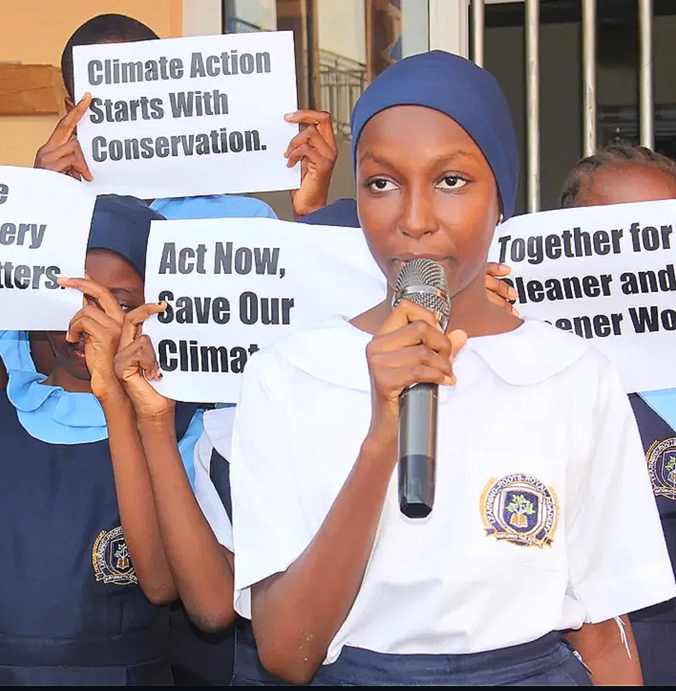

SheCycled is a circular economy social enterprise founded in 2024, after the Bokkos Christmas Eve Massacre to serve displaced women and girls, and environmental protection through climate action, working at the intersection of climate action, menstrual health, and sustainable innovation.
Transforming agricultural waste, particularly discarded banana pseudostems, into biodegradable sanitary pads, creating a more sustainable alternative to conventional menstrual products while addressing period poverty among women and girls in underserved communities and Internally Displaced Persons (IDP) camps.
Our Vision: To ensure that by 2030, women and girls in underserved communities across the Middle Belt, Nigeria, have free access to menstrual products in schools and workspaces.
← Back to Home